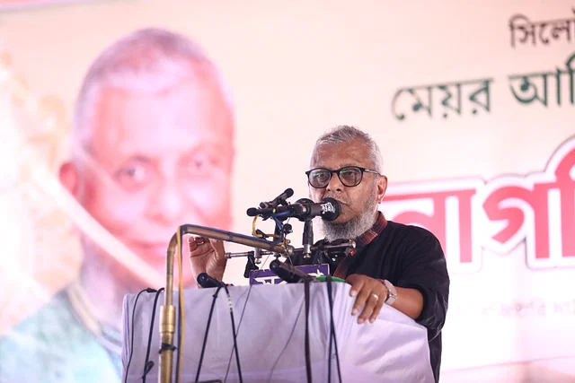

ভোট নিয়ে মানুষের আস্থা তলানিতে পৌঁছেছে: নাগরিক সভায় মেয়র আরিফুল
নিজস্ব প্রতিবেদক ও প্রতিনিধি সিলেট
প্রকাশ: ২০ মে ২০২৩, ১৯: ০৬

সিলেট সিটি নির্বাচনে প্রতিদ্বন্দ্বিতার বিষয়ে সিদ্ধান্ত জানিয়ে বক্তব্য দিচ্ছেন বর্তমান মেয়র আরিফুল হক চৌধুরী।
শনিবার বেলা সাড়ে তিনটায় নগরের রেজিস্টারি মাঠেছবি:
প্রথম আলো